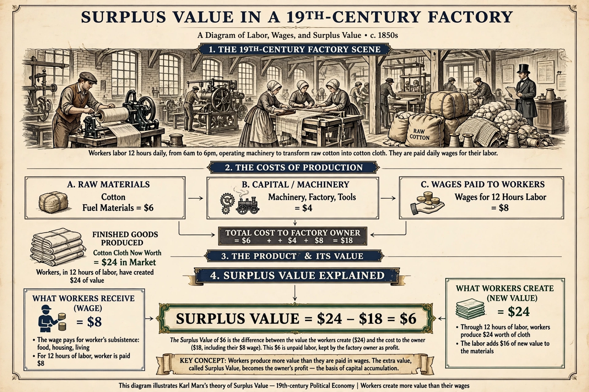

Surplus value
From Wikipedia, the free encyclopedia

Surplus value is a concept in Marxian economics: the value produced by a worker in excess of the value of their own Labour power (the wage), which is appropriated by the capitalist as profit. For Karl Marx, developed in Das Kapital (1867), the extraction of surplus value is the mechanism of exploitation under capitalism and the source of profit, interest and rent.
Theory
Marx distinguished the value of labour power — determined, like any commodity, by the labour needed to reproduce it (food, housing, training) — from the value labour creates in the working day. If a worker's necessary labour time is four hours but the working day is eight, the remaining four hours are surplus labour producing surplus value. The rate of surplus value (s/v, surplus labour over variable capital) measures the degree of exploitation.
Absolute and relative surplus value
Capitalists raise surplus value absolutely, by lengthening the working day (the struggle over hours that produced factory legislation), or relatively, by raising productivity in wage-goods industries so that necessary labour time shrinks — the path of machinery, Taylorism and automation. Marx argued competition forces each capitalist to pursue relative surplus value, driving the system-wide tendencies he analysed, including the tendency of the rate of profit to fall.
Criticism and legacy
Mainstream economics rejects the Labour theory of value underpinning the concept (the 'transformation problem'), favouring marginal productivity theory. Surplus value nevertheless remains central to Marxian economics, labour-process theory and contemporary debates about profit shares, stagnant wages and platform work.